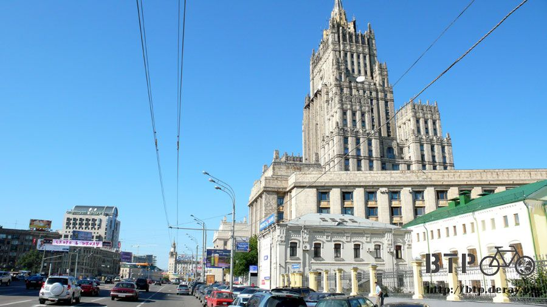
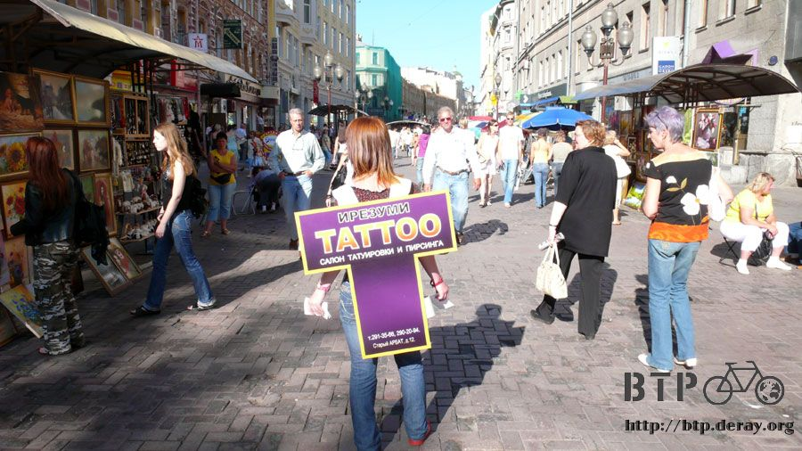
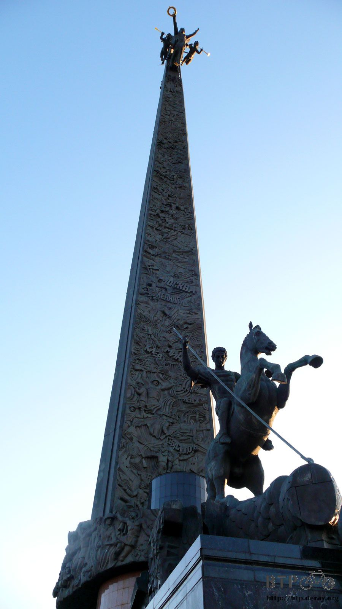
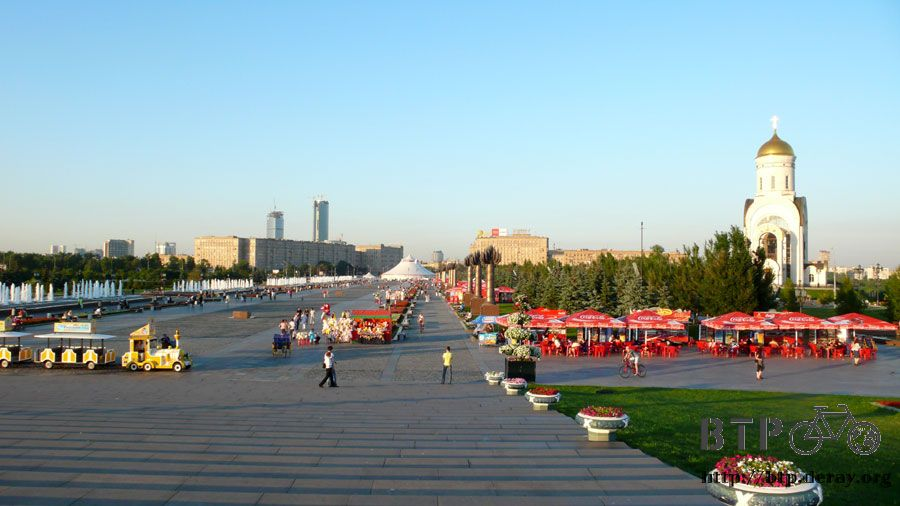
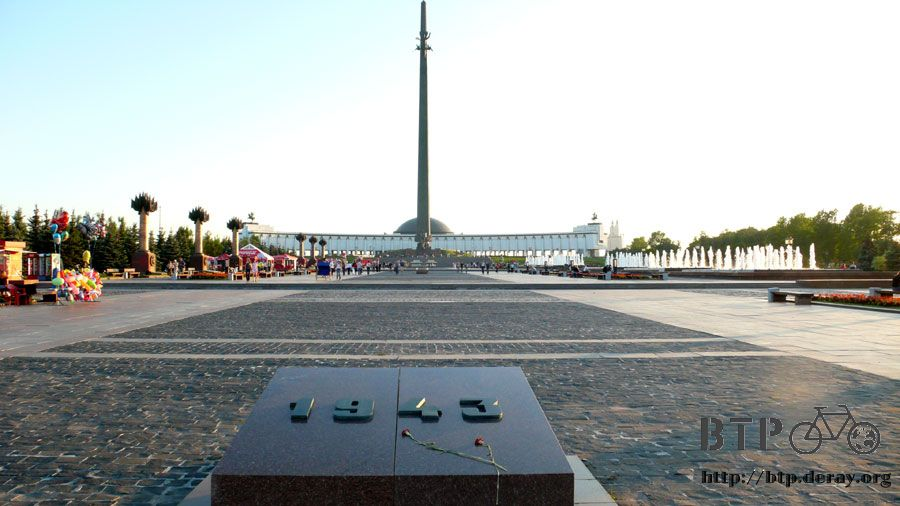
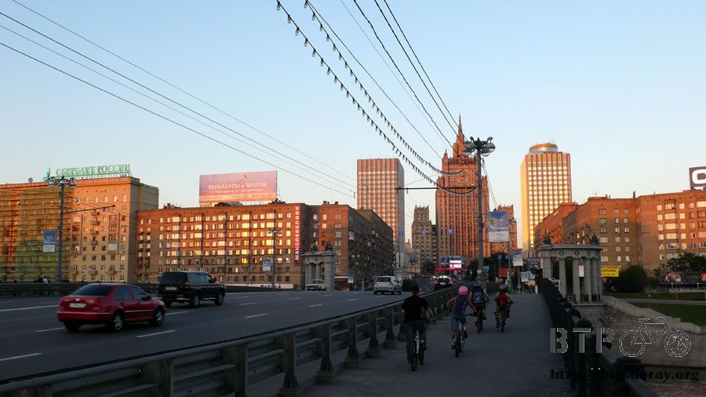
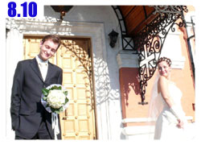

BTP上身 勇氣倍增
昨天穿藍白拖騎小多晃了半天的市區，都沒有被警察給攔下來，也許是穿著拖鞋看起來很當地人的樣子，少了觀光客的形象。
今天如法炮製，雖然MSI的人買了新鞋子給我，但依然穿著方便透氣的藍白拖在莫斯科大搖大擺地走。

和去義大利開會的大家分別之後，莫斯科就沒有認識的台灣人了，晚上肚子餓也不會有人帶著我去吃飯，我已經開始想念你們了T_T
今天第一個想去的地方是很有名的步行街，有很多的商品販售，就是觀光客會去的那種地方，想成是烏魯木齊大巴扎的莫斯科版本就對了。
依然從住的地方先往北走，過這一條熟悉的橋樑和大河。
很快就抵達步行街，這裡是完全百分之百的步行區域，為了良好的國際形象，牽著小多用走的，這樣逛起來也比較仔細。
有辦法在這邊擺攤的話肯定都是黃金攤位，這條街挺寬的，規劃得很不可思議，本來以為會擠到翻掉，但是小販的數量並沒有爆炸性的成長。
最常見的攤販就像這樣子，在路中間架起攤位，販賣的東西每一攤都大同小異，必備都有俄羅斯娃娃跟很毛的帽子。
比較有特色的出乎意料竟然是T-shirt～畫得非常好！
在路上騎車都會看到『注意狂奔的行人』這樣的告示牌，只多加了一筆就變成『小心癡漢』XD
上面那一件『革命(REVOLUTION)』也很酷，畫的應該是列寧吧～手勢相當給他有氣勢，穿這件去上班，在老闆面前來回走動，可以消除累積的壓力。
其他還有賣一些組合式的商品，小麥梗編的迷你拖鞋配上一些木頭娃娃、會下雪的城堡、瓷蛋雕刻。
標價都直接貼在上面，感覺價錢很硬，其實不然，畢竟這裡是觀光區，大家賣的商品大同小異，所以殺價是沒問題的。
之前一路走過哈薩克和俄羅斯，殺價沒有成功過，除非是對方主動降價，讓在中國殺紅眼的我很垂頭喪氣。
今天來到這裡，沒買太多東西，但是兩百盧布的東西硬是給他殺到一百二十盧布，老闆感覺很痛苦但是願意成交，這時候再說還是太貴不想買～爽！
為什麼可以這麼溜的殺價呢？俄文不是說很難學。
沒錯，俄文真的很難，到現在我連一、二、三、四、五都念不出來，但在這裡一點影響也沒有。
這裡是觀光客必經之路呀，要做觀光客的生意，店家怎能不會說英文？搞不好簡單的中文跟日文也能說上幾句。
在步行街中央的部分有一座雕像，聽說是一位很有名的詩人，看這個樣子很像在漫步尋找靈感。
前面有街頭藝人在玩音樂，覺得好聽不一定要給錢，熱情的鼓掌也能換來微笑。
街上的攤販都是賣紀念品，街邊的房子裡面九成都是餐廳，遮陽的屋簷下就是露天的咖啡館，各式料理都有看到。
掂掂自己身上的銀兩，沒想過自己能在裡面吃頓飯，但很想了解一下菜單的價位到底有多驚人。
不論觀光再怎麼發達的國家，最熱鬧的景點遊客數量最多的還是本國人。
莫斯科的女生很會打扮，金髮碧眼的本來就像洋娃娃，配上火辣的衣服看得我發愣，連照片都忘了拍。
火辣的程度可以從幾點觀察：內衣不是必備品、裙子在膝蓋以上三十公分、上衣只有一塊遮不住什麼的布。
講點健康的，遊記可能有很多小朋友在看，要保持老少咸宜的風格。
這條街上也賣很多的畫作，簡單可以分為兩種，一個是像這種已經畫好的，遠看以為是複印品，近看真的是手工繪製，只是這東西在哪邊買不都一樣？
另一種就是現場繪畫，在河邊、公園、觀光景點都一定會有的人物素描，這裡也是少不了的。
至少有十位畫家在這邊討生活，畫得比較差的就拿著藝人的相片在練習，畫得好的攤位還得要排隊才行。
真不愧是靠畫畫吃飯的人，真的是給他很厲害，居然能畫得這麼漂亮，要是我有她千分之一的功力，想靠畫畫點餐就不是問題了。
這個畫家好像不太專心，眼睛會往胸口和大腿盯著看，旁邊是他的作品，真是了不起的繪畫功力，你的確有資格盯著美女看。
這種是很冷的攤位，誰願意花錢和製作的一點也不像的玩偶拍照，冷到走過這邊的時候還打了哆嗦~_~
相較於那個做得很爛的人偶，這三隻就做得栩栩如生，最右邊是小精靈多比，中間的不認識，左邊好像是俄羅斯的現任總統，有這麼帥嗎？

這個老伯應該不是俄國人，英文歌唱得極好聽，也有在賣自己錄的CD。
老伯手上彈的樂器很特殊，看起來是一般的吉他，但是卻有兩支可以彈的琴身，右腳還掛著響鈴，一邊彈琴還可以一邊用腳尖伴奏。
銀飾品、耳環、項鍊，這樣的攤位前面聚集好多女生，只要老闆待客親切，客人買得就不手軟。
除了很毛很毛的帽子之外(在冬天我相信很實用，但現在是盛夏耶~_~)，也有賣軍服，連肩膀上的階級章跟胸口的榮譽勳章都有。
聽說俄羅斯假警察也蠻多的，指南上都會說，被攔下來最好要求看一下對方的證件，可是誰有這個膽呢？這邊可是警察公然勒索觀光客的極權國家呀。
這一攤不只光賣毛帽子，連防毒面具、戰機駕駛戴的氧氣面罩都有在賣。
在別的國家我會覺得這些是仿製品，在俄羅斯我會覺得他是真的有門路弄到這些真品來賣。
不同於街頭正中央小販，這是第二種型態，圓柱型的攤販，打開之後裡面就是琳瑯滿目的商品，下班只要把兩扇門關起來鎖上就好了，連收都不用收。
小巷子裡的噴漆牆壁，看了很失望，並不是多漂亮的街頭藝術，就只是噴得亂七八糟而已，而且都是字沒有圖案，說不定這個其實是留言板？
腳踩的地板比紅場的路好走，是平整的磚瓦鋪地，一磚一瓦都有自己的設計。
在人來人往的步道上，為了拍下這一張沒人走過也沒有礙眼影子的地面，就只有這麼一瞬間，我站了足足十分鐘。
當你拿出相機要拍某個東西，如果路過的人會覺得擋到你取景而繞路讓開你，那他肯定自己也是個觀光客，當地人誰鳥你呀。
長長的街分布的攤販種類也不一樣，這一區都是賣紀念品、這一區都是賣畫，那現在走到的就是刺青區。
旁邊的店家也都是正港的刺青店，街邊的就是用藥水繪圖的假刺青，圖案只會維持一個月左右。
走過這邊的時候攬客攬得很兇，每一家都想搶生意，但價錢是公訂價，一百盧布一個圖案，有一本冊子可以挑喜歡的樣式。

看到一位全身都是刺青的師傅，眉毛、鼻頭、下巴、肚臍，這些能看見的地方都穿了環，沒看見的不知道還有多少？
牽著小多過去，指著車身上的BTP貼紙，說請在手臂上畫一輛跟這個一樣的單車。
坐在小板凳上，路過的人會圍觀，品頭論足地說『他畫單車耶～為什麼要畫單車？』
捲起右手的衣服，師傅先用原子筆打稿，然後用牙籤之類的東西沾著藍黑色的藥水繪畫。
這個藥水不知道有什麼特殊的藥性，看起來只是隨便畫在皮膚上，感覺拿張衛生紙擦掉就沒了，但是顏色卻吃到皮膚裡面。
真的是ㄧ個月的時間才會褪色，想洗也洗不掉。
但是用肉眼分不出來是藥水還是廣告顏料，所以要小心遇到不誠實的店家，便宜行事。
五分鐘之後BTP的標誌就烙印在手臂上了，如果拼命一點的話，想趕在圖案消失之前，用一個月的時間從莫斯科騎到巴黎。
真的想做的話其實沒有不可能的事情，只怕這麼趕路會失去沿路欣賞風景和悠哉旅行的心情，不如少洗一點澡好了 ^^"
喬巴～！是你嗎？
你怎麼長那麼多毛？還被穿上奇怪的衣服，頭上的角也不見了，魯夫跟騙人布他們呢？
這邊就是步行區的盡頭了，因為我是從左邊進來的緣故，反之的話這裡也可以是入口，晚上來這邊想必又是不同的風味唷。
猜猜這裡是什麼地方，看起來很像公園，但這邊是馬路中間的分隔島。
左邊跟右邊都是大馬路，中間留這麼大的面積規劃成公園，增添許多綠意，擁擠的台北市沒辦法這樣搞，但是在莫斯科這座大城市，都市的規劃很有新意。
安全島公園裡有座奇怪的銅像，一個人划小木船，後面是ㄧ大堆只有頭的馬泡在流著水的斜坡中，這有什麼典故嗎？
昨天沿著河畔看見對面有座金色屋頂的白色大教堂，就是這一棟啦，今天跨過河畔來近一點參觀。
開放式的建築物，像公園、廣場，都是不用門票的，可是封閉式的建築物無一例外都是要花錢買票，很好奇裡面是什麼樣的設計呀。
512MB的記憶卡很快就拍滿了，今天出發的時候本來想再買一張品質優良、容量大一點的卡當備用。
萬一要是手上這張記憶卡也掛點的話，那接下來的旅程就不能拍照片了，放一張照片，我就可以少寫好幾千個字，如果要寫純文字的遊記....@@"
回宿舍存照片，洗把臉、吃一條蛋糕、喝一壺水繼續出發，這次是要去西邊的一座大廣場，跟1943年有關係的。
路線有所變更，往北進入紅場的路已經很熟悉，往西邊走地圖又得拿出來看，英文版的地圖和俄文的道路牌很難兜起來。
在龐大分岔的十字路口就迷路了，本來只想右轉過橋，但是騎到小徑裡，人車都沒有，靜悄悄的，遠方可以看見尖頂的教堂。
既然過不了橋，那就牽車下河畔，沿著河畔走～
幾乎已經是法則：越是迷路風景越是美麗，所以當迷路的時候不要慌張，隨便走總能接上個什麼路標，到時候再找出自己的方位就好了。
河水真的是有點髒，還好沒有飄著異味，心中一直期盼著，要是水質能夠清澈湛藍一些的話該有多好。
此時大約六點，太陽的角度西斜，映照在河面上閃著金色的光芒，髒髒的河水居然看起來是藍色的。
往西邊走的河畔規劃得很大一條，也是禁行汽車的行人天堂，種植了許多大樹和草皮。
很多人在這邊騎自行車環河、溜直排輪、慢跑和散步，完全沒有任何的商家小販在這邊做生意，非常愜意的河岸。
草皮上有很多人穿著泳裝在做日光浴，比基尼的美女也不少，可是一眼望去八成以上都是全身長毛的大叔。
騎過這段路的時候眼睛有點痛，閉著眼睛騎車又怕會摔進河裡，請感受一下我的痛楚。
這座橋很有趣，最上面是給汽車走的，中央則是火車和人通行的部分，月台也設計在裡面，最底下就是觀光船駛經的路線。
河畔對面是很大的橢圓形圓頂建築物，從外觀猜測應該是巨蛋型的體育場，對面人聲鼎沸很熱鬧，下次去那邊看看。

有些階梯可以直接走到河裡，底下什麼都沒有，就是ㄧ個小平台，隱蔽性比較高，如果有情侶想親熱的話是個好地方。

從下面近一點看河水，我的媽呀～漂浮著黑色的油漬，雖然水面沒有礙眼的垃圾，但這些髒污該怎麼清理呢？
行駛在河上的觀光船數量很多，這艘船的編號是莫斯科228號，以今天看到的數量，我相信確實有這麼多艘觀光船。
河對面的城市有著紅白相間的大煙囪，這次不是冒著火和黑煙的那種煙囪，那邊是核能發電廠，就這麼蓋在都市裡面，信心和技術是關鍵。
河畔分段，騎著騎著就跟慢跑的大叔一樣到了盡頭，得想辦法爬回路面才行。
繞著綠意繽紛的小徑爬上階梯，行人的天堂一下子就變成汽車的世界，在市區騎車要比在郊區還注意安全，馬路如虎口很恐怖。
本來應該往廣場的方向去，但是有點迷路，原來是地圖看錯，自己以為在A路，結果在B路，所有拐彎的方向和路線通通都差了九十度。
拿著英文版的地圖在莫斯科移動，我已經盡力了，這時候有莫斯科版的地圖會更實用一點，看不懂沒關係，字母長得一樣就好了。
騎到一個小湖區，完全不知道自己身在何方。
想找地標型的建築物來定位，小湖在地圖上沒有標記，這些高樓大廈更是不值得一提。
向推嬰兒車散步的媽媽問路，拿地圖比著自己想去的廣場，依照媽媽說的方向騎車，走著小路離開湖邊。
看見兩個騎自行車的少年，跟在他們後頭騎車，運氣很好，想去的地方一樣，就這麼順利找到廣場的入口。
順著這條大路進去，往建築物的方向走，那是ㄧ棟博物館，下次再來參觀。
這邊非常寬敞，一樣是汽車不能通行的地方，路上好多人在溜直排輪，騎自行車和溜滑板的則是少數。
有點距離時看不清楚，靠近了才發現原來那四個雕像是軍人。
這棟立方體很有設計感的就是博物館，底下由龐大的圓柱支撐，看起來就像浮在空中旋轉的樣子。
博物館另一側的雕像，最右邊是未經雕塑的石頭，然後從長方型一個一個堆疊，外型有了輪廓，最後是人的樣子，恕我愚昧，寓意不明。
奇怪雕像的旁邊是放置在地上的用品，鞋子、帽子、眼鏡、杯盤。
繼續向前走，看見開班授課的直排輪教室，學員都是初學者，能忍住笑的話，在這邊看摔倒的畫面還挺有趣的。
繞過這條白色的半月型圍牆，會抵達廣場的正中央。
廣場正中央屹立著一根超級高的柱子，頂端是吹號角的天使，雕刻著許多文字和圖案，底下是ㄧ個人騎一匹馬，前面還斬下了一顆巨大的龍頭。

柱子四周的廣場是圓形的，非常寬廣，前方則是漂亮的走道，小販在這邊又多了起來，因為這裡才是參觀廣場的主要入口。

一般的人力自行車都是有人在前面騎車，付錢的大爺坐在後頭看風景。
莫斯科的設計非常巧妙，正好相反過來，騎車的駕駛在後頭，乘客則能夠用最佳的視野飽覽美景，不會被騎車的人給擋住。
騎車的都是辣妹，生意明顯比旁邊的載客觀光小火車好上非常多，小火車很可憐，都沒人要搭，在這裡待一個多小時，沒看它發車過。
從遠一點的地方回頭看剛才那根柱子，後面是白色的彎型牆，底下還放著幾門大砲。
正門入口沿路都有噴泉造景，美麗又涼快，仔細看水裡面都有照明燈，在夜間若是打上七彩絢爛的燈光照明，一定很美麗。
主題碑到了，很簡單地寫了1943，沒別的文字，上面還放了兩朵鮮艷的紅玫瑰。

看遊記的各位鮮少有人是在1943年之前出生的，但這一年是所有人都不陌生的年代，二次世界大戰。
人類史上最大規模的戰役，雖然年代已經久遠，但不斷有電影、遊戲一直將戰爭的畫面重新帶到世人面前。
很慶幸自己生活在和平的年代，只需要打電動就能參戰，死掉了重來就好，真實的人生可沒有接關這回事。
希望大家都能夠了解戰爭是很糟糕的事情，互相殘殺、彼此侵略，無數的生命被奪走、家庭被拆散。
當時是侵略國的日本，都能拍出螢火蟲之墓這樣賺人熱淚的卡通，明白說明了不論是侵略或是抵抗，受苦的都是百姓，沒有一方能得到好處。
人類唯一從歷史中學到的教訓，就是人類無法從歷史中學到教訓。
戰爭，會有平息的一天嗎？世界和平何時才能實現？
廣場參觀完畢就要回去宿舍了，路上看到這座大拱門，黑色系讓它看起來很有質感，可惜家裡放不下這麼漂亮的藝術品。
這邊的路大條得很誇張，數一數，單向五線道，雙向就是十線道的大馬路，整個很驚人，而且路中間的分隔島也是寬得可以蓋公園。
好恐怖的哈囉貓，紅到莫斯科來了>"<
話說這隻貓沒有尊嚴，它會依照所在地域的不同打扮成當地的樣子，在大阪就變成章魚燒，頭上還插一根牙籤。
在莫斯科會不會變成俄羅斯玩偶的樣子？
太陽西下，快要沒入地平線了，這座城市市中心的部分很少使用玻璃帷幕的建材，外圍的新大樓才會使用。
古色古香的建築物有種時光倒流的感覺，這條馬路很貴氣，知名的品牌在此都能找到，但是商店的招牌卻都低調地懸掛。
不會搞得整個街頭全是霓虹燈和大大小小的招牌看板，看著莫斯科，想著台北的樣貌，老是說自己是一流的城市，不知道是跟誰比呢？
當我知道莫斯科人口有一千萬的時候，直覺就是這邊非常擁擠，事實上並不會，大多時候我都懷疑人怎麼那麼少？
這兩天騎著小多在市區晃，總覺得有什麼地方怪怪的，跟我印象中的大城市有一點不一樣。
路上跑的汽車很多，但是城裡面的空氣好得令人吃驚，一點廢氣的臭味也沒有，站在街頭可以大口地深呼吸。
大眾運輸，地下跑的是電車，路上跑的也是電車，環保又不會排放廢氣，萬里無雲的天氣，城市也不會被髒空氣籠罩。
另外值得一提的，路上的汽車幾乎不會鳴喇叭，相當有公德心地在駕駛，就算車禍猜想也是靜靜地默不吭聲就撞上去。
這棟白色的建築物，前面插了一圈國旗，外面停滿了一堆車，還以為是什麼國際中心之類的地方，居然只是一個地鐵站呀！
明天打算好好搭地鐵遊覽一下莫斯科，記憶卡真得要多買一張才行，太多景色值得拍照做紀念。
沒多久記憶卡就拍滿了，得忍痛刪除一些照片才能繼續拍新的。
跟著小朋友騎車回家，其實這個時候我又迷路了，自以為騎在B路上，但其實是A路，難怪道路的走法和地圖上差那麼多。

晚上九點多河面依然忙碌，一艘艘的船隻忙著載客人遊覽莫斯科，有些船尾端會插上其他國家的國旗，插上法國國旗的大概就表示這艘船以法文做講解吧。
迷路繞個圈子，又回到今天早上要去步行街的時候看見的雄偉建築物，有一個招牌寫著1951年，但不知道這一棟是什麼。
騎到這裡就簡單了，過一座已經騎了好幾次的橋，回去宿舍的路熟悉得可以倒著騎車都沒問題。
晚上要整理這麼多照片，忙得好晚～肚子咕嚕叫的時候才發現還沒吃晚餐，遠在義大利的大家，你們正在吃什麼好料呢？@@"
為了進入歐洲之後要自己開伙，今天的晚餐就自己煮來吃當練習，以免之後怎麼煮都是吃泡麵。
廚房有方便的瓦斯，燒開水煮了一把冬粉、配上速食湯包、中國買的熱狗切成片狀、煮滾後灑上胡椒粉。
晚餐就搞定啦～看起來不怎麼樣，味道可是五星級。
邊吃美食邊寫遊記，中英文版同時進行，網頁也想小幅改版一下，看來今天要天亮才能睡了zzzZZ
繼續閱讀：8.10 到手再說

俄羅斯-盧布－ 1：1.3 台幣
8.9 |
總計：100元 |
BTP標誌刺青100元 |
|